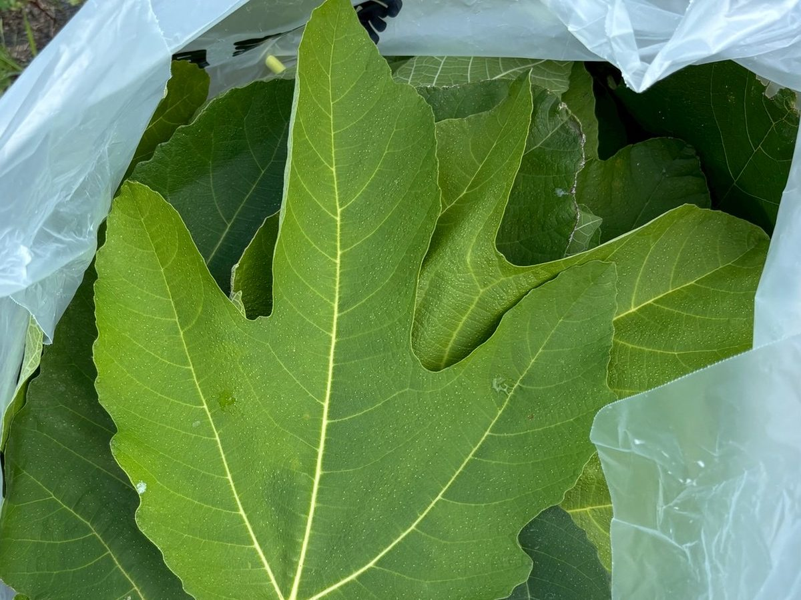

NANONI について
名前の由来と、地元・蟹江町のことと、私たちのこと。
ブランド名の由来
お酒 “なのに” 無花果
日常 “なのに” 特別
シンプル “なのに” 満足
NANONI という名前は「なのに」から来ています。 その組み合わせは思いがけないけれど、飲めば理由がわかる。 そういう一本を目指しています。
蟹江町のこと
私たちの地元は、愛知県の西南部にある海部郡蟹江町です。 名古屋のとなりにあり、名古屋駅から電車で 10 分ほど。 面積はおよそ 11 平方キロメートル、人口は 3 万 7 千人ほどの小さな町です。
町には蟹江川、日光川、善太川、福田川、佐屋川、大膳川の 6 本の川が流れています。 川の面積は町全体のおよそ 5 分の 1。海抜 0 メートルの土地に水路が張りめぐらされた、 「水郷のまち」です。
地名が記録に残るのは 1215 年（建保 3 年）まで遡ります。 当時この一帯は海に囲まれていて、岸辺の柳のあいだに蟹が多く棲んでいたことから 「蟹江」と呼ばれるようになったと伝えられています。
いちばん知られているのは、400 年以上つづく須成祭（すなりまつり）です。 8 月第 1 土曜の宵祭では、一年の日数にちなんだ 365 個の提灯を灯した巻藁船が 蟹江川を進み、翌日曜の朝祭では車楽船（だんじりぶね）が続きます。 2016 年にユネスコ無形文化遺産「山・鉾・屋台行事」のひとつに登録されました。 川の上で行われる祭りであることも、水郷のまちらしいところです。
名古屋から電車で 10 分。近い場所にありながら、素通りされることの多い町です。
蟹江町の白いちじく
蟹江町は、古くからいちじくの名産地です。 最盛期の昭和 14 年ごろには、名古屋方面へ向かう貨物列車が 「いちじく列車」と呼ばれるほどの収穫量がありました。
町でつくられているのは蓬莱柿（ほうらいし）とホワイトゼノアという品種です。 ほかのいちじくより皮が白いことから「白いちじく」と呼ばれています。 蓬莱柿は 370 年ほど前に中国から伝わったとされる在来種で、 地元では「こーりゃーがき」の名で親しまれてきました。 甘すぎず、青臭さもなく、酸味とのバランスがとれた上品な甘さが特徴です。
収穫はお盆前後から 10 月中旬ごろまで。 いまは収穫量が少なく、市場にはほとんど出回りません。 町には「かにえ白いちじく街道」と名づけられた一帯があり、 白いちじくを使った菓子や料理を出す店が集まっています。
実ではなく、葉を使う
NANONI -white- が使っているのは、実ではなく白いちじくの葉です。 葉のほうが香りがよく出るため、麦芽とホップに合わせたときに いちじくらしい芳醇さがはっきりと立ち上がります。
そしてこの葉は、ふだんは使われずに捨てられてしまう部分です。 香りがよく出ること。使われずに終わるものを生かせること。 その両方が、実ではなく葉を選んだ理由です。
葉は、蟹江町のいちじく農家に直接お願いして分けていただいたものです。 商品名の「white」は、この白いちじくの「白」から取っています。

私たちについて
動かしているのは、同級生 3 人です。 地元である蟹江町を盛り上げたい、という一点で集まりました。
白いちじくは町の特産品でありながら、収穫量が少なく、 町の外ではほとんど知られていません。 一本のビールが、蟹江町への入り口になればと思っています。
NANONI は愛知県蟹江町を拠点とする 24CLUB が企画・販売しています。 自社では醸造所を持たず、レシピの方向づけとブランドづくりを担い、 仕込みは醸造所に委託しています。
デザイン
缶のラベルと、サイトで使っているブランドマークは yoik design Inc. によるものです。
ブランド情報
| ブランド名 | NANONI（ナノニ） |
|---|---|
| 企画 | 24CLUB（愛知県蟹江町） |
| 醸造 | 株式会社 Story Agent（IB BREWING） |
| ラベルデザイン | yoik design Inc. |
| 販売 | 24CLUB |
| @nanoni_kanie |
まずは一本、試してみてください
いまつくっているのは、この一本だけです。